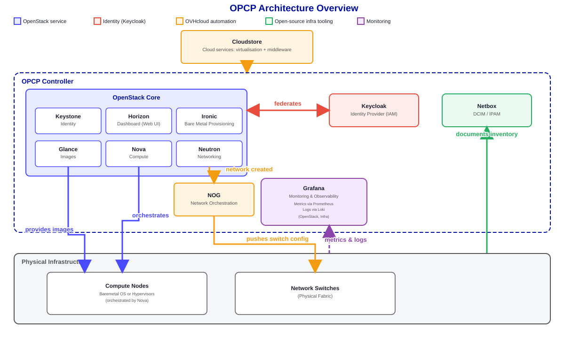

Core Concepts of OpenStack
OpenStack is a cloud operating system that controls large pools of compute, storage, and networking resources throughout a data center, all managed through a dashboard or via the command line interface. It's composed of independent services that work together to provide a complete cloud computing platform.
OPCP Core main components
Here are the main components running in OPCP controller, including OpenStack modules.

Understanding OpenStack Services
Nova - Compute Service
Nova is the core service responsible for managing and provisioning instances in OpenStack. It handles the lifecycle of instances including creation, scheduling, running, and termination. In OPCP, Nova can deploy baremetal by calling Ironic module.
Neutron - Networking Service
Neutron provides networking as a service for OpenStack. It allows users to define and manage virtual networks, subnets, routers, and firewalls. Neutron supports various network topologies and can integrate with physical network infrastructure.
Keystone - Identity Service
Keystone is OpenStack's identity service that provides authentication and authorization for all other OpenStack services. It manages users, tenants (projects), roles, and services. Keystone supports various authentication methods including username/password, tokens, and application credentials.
In OPCP Core, Keystone is federated by Keycloak, which is the Identity Provider for Layer 1. Both Keystone and Keycloak are running inside OPCP Controller.
Glance - Image Service
Glance serves as the image service in OpenStack, storing and retrieving virtual machine images. It supports various image formats and provides metadata management for images. Users can upload, download, and manage images that are used to create instances.
Supporting Services Beyond OpenStack
OPCP also relies on additional tools, alongside OpenStack, that provide identity federation, network automation, deployment, and observability across the platform.
Keycloak - Identity Provider
Keycloak acts as the platform's Identity Provider, federating with Keystone so that authentication is centralized across every layer of OPCP.
NOG - Network Orchestration
NOG is an OVHcloud proprietary module that automates network configuration. Whenever Neutron creates a network, NOG generates the corresponding switch configuration and pushes it to the physical infrastructure, keeping the underlying network fabric in sync with OpenStack.
Cloudstore - Deployment Service
Cloudstore, also developed by OVHcloud, simplifies the deployment of operating systems, hypervisors, and cloud services across OPCP's servers.
Netbox - Infrastructure Documentation
Netbox is an open-source DCIM/IPAM tool used to document the physical and logical infrastructure — racks, servers, network interfaces, IP allocations, and VLAN assignments — acting as the single source of truth for the datacenter inventory.
Grafana - Monitoring & Observability
Grafana provides the dashboards used to visualize metrics and logs collected across the platform, giving operators a unified view of compute, network, and storage health.
Key Concepts
Domains, Projects, Users, Groups & Roles
Keystone organizes access control around a small set of related concepts. A domain is the highest-level container: it groups a set of projects, users, and groups that are managed together, and keeps identities in one domain fully isolated from another. A project (sometimes called a tenant) is where resources such as instances, networks, and volumes actually live. A user is a person or a service account that can authenticate, and users can be gathered into groups so that access can be granted to many people at once instead of one by one. A role such as admin, member, or reader defines what a user or group is allowed to do, and a role assignment always ties a user or group to a specific scope — either a single project or the entire domain.

What a role assignment actually is:
- A role assignment always combines three things: a user or a group, a role (e.g. admin, member, reader), and a scope.
- Project-scoped: the role only grants permissions inside that one project (the most common case, shown in green in the diagram above).
- Domain-scoped: the role applies to every project in the domain, and can also manage the domain's users and groups.
- Groups let an operator grant or revoke access for many users in one action instead of assigning roles user by user.
Projects (Tenants)
Projects are organizational units in OpenStack where resources such as instances, networks, and volumes are grouped. Each project has its own set of users and permissions, allowing for resource isolation and management.
Endpoints
Endpoints are URLs that expose OpenStack services. Each service exposes HTTP endpoints that clients can query to interact with the service. These endpoints are listed in the Keystone service catalog after authentication.
Authentication
OPCP uses Keycloak as the IAM service and federates with OpenStack Keystone module. Users can authenticate using various methods including username/password, tokens, or application credentials. Once authenticated, users receive a token that grants access to OpenStack services.
How They Work Together

These services work together to provide a complete cloud computing platform. For example, when creating a new instance:
- Keycloak authenticates the user and federates with Keystone to provide a token
- Neutron creates the necessary network connectivity, and NOG pushes the corresponding switch configuration to the physical infrastructure
- Nova launches the virtual machine with the specified resources
- Glance provides the base image for the instance
Beyond this request path, other services keep the platform running:
- Cloudstore deployed the operating systems and hypervisors that host these instances
- Netbox documents the underlying physical and network infrastructure
- Grafana continuously monitors the health of compute, network, and storage resources
Summary
- OpenStack consists of independent services that work together to provide cloud computing capabilities
- Nova manages virtual machines, Neutron handles networking, Keycloak and Keystone handles identity, and Glance manages images
- Resources are organized into projects for isolation and management
- All services communicate through standardized APIs accessible via endpoints
Next
Now that we have an overview of the core concepts, we will go over the basic OPCP features:
- Authentication (creating a user and a client).
- Creating networks.
- Deploying a server.